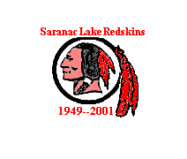

SPORTS
SPORTS
- Branch, Roland (Dud) 1951
- Breen, Ian 1990
- Brewer, Heather 2001
- Brown, Bernard 1932
- Bruce, Matt 1994
- Camelo, Pete 1978
- Capone, Dan 1979
- Carter, Bob 1948
- Charland, Art 1936
- Charland, Rick 1989
- Connors, Ralph 1943
- Corso, Jim 1961
- Daunais, Jim 1998
- Decker, Charlie 1974
- DeFranco, Allison 2001
- DeMars (Bombard), Cindy 1982
- Dietz, Milford 1930
- Doty, Derek 1975
- Doty, George 1940
- Doty, Tom 1938
- Dupree, Don 1938
- Duprey, Phil 1963
- Durocher (Delosh), Robin 1979
- Dwyer, Dennis 1989
- Edelberg, John 1939
- Ellsworth, Cy 1991
- Ellsworth, Will 1994
- Farmer, Mark 1979
- Farmer, Troy 1985
- Finnegan, Walt Sr. 1930
- Finnigan, Tom 1955
- Fisk, Bridget 1990
- Fobare, Tod 1978
- Frost (LaPlante), Lynn 1978
- Gallagher, William (Chip) 1968
- Goetz, William 1942
- Griffin, Bob 1960
- Herron, Wally 1930
- Hoffer, Charlie 1958
- Holec (Muldowney), Patti 1980
- Holway, Gary 1949
- Howard Jim 1976
- Howard, Mike 1983
- Kelly, J. Lewis 1940
- LaFountain, Gerald (Faker) 1962
- LaPan, Jim 1941
- Laramee, Matt 1987
- Leduc (Bombard), Natalie 1948
- Luce, Mickey 1960
- Manley, Don 1950
- Martin, Tom 1950
- McCormick, Steve 1988
- McGibon, Dean 1956
- McGrain, William (Bub) 1946
- McKillip, Dan 1955
- McLaughlin, Bill 1937
- Meade, Dan 1974
- Moody, Scott 1989
- Morgan, Forrest (Dew Drop) 1940
- Morgan, Steve 1960
- Morgan, Terry 1972
- Muldowney, John 1977
- Munn, Tim 1979
- Navin, John 1951
- Niederbuhl, Art Sr. 1943
- Norman, Thomas (T.C.) 1977
- O'Brien (Muldowney), Marilyn 1993
- Odell Bill 1958
- Pelkey, Brian 1968
- Perras, Mickey 1978
- Perras, TJ 1979
- Plumadore, Dustin 1998
- Plumadore, Hayward (Red) 1933
- Raymond, Mark 1989
- Reyell, Bob Sr. 1945
- Roberts, Ryan 1999
- Rottner, Chris 1972
- Samuels, Rick 1982
- Sennett, Alan (Dick) 1940
- Snizek, Laura 2002
- Skeels, Myron (Rube) 1938
- Sullivan (Perras), Beth 1983
- Townsel, Bruce 1974
- Townsel, Kim 1975
- VanNortwick, Miles Sr. 1937
- Vitullo, Camillo 1943
- Wallace, Tom 1928
- Walsh, Gene 1952
- Zaunbrecher, Laura 2000
- Zaunbrecher-Reeves, Analise 2000
TEAMS
- 1995 Boys Cross Country
New York State Champions
Team Members in 1995
- Sean Burke
- Tim Burke
- Joe Cherneski
- Matt Cook
- Bill Demong
- Matt Dougherty
- Dan Fahl
- Zach Handler
- John Leavitt
- Luke Meissner
- Chris Moore
- Mike Stemp
Coaches
- John Raymond
- Jim Hayden
- Fraser Sturgeon

DISTINGUISHED CITIZEN AWARDS
2002
- DOCTOR DAVID MERKEL
- JUDGE JAN PLUMADORE
2003
- DR. PATRICIA FOBARE-ERICKSON
- LIONEL ARLAN